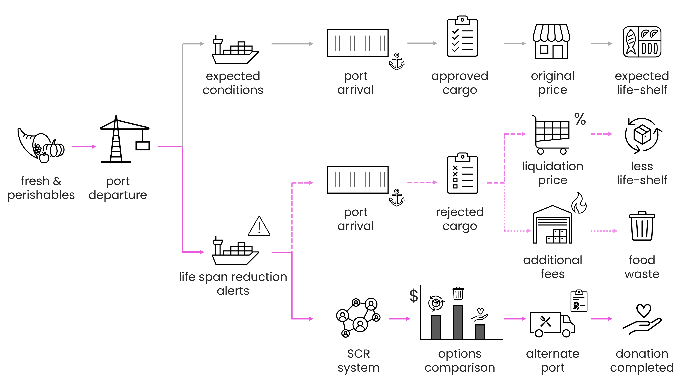

Smart Cargo
Systems thinking · API orchestration · Stakeholder mapping · Logistics strategy · Product vision
Smart Cargo Redistribution (SCR) is a "Rescue Layer" for maritime logistics that transforms cold-chain failures into humanitarian assets. By integrating real-time monitoring services with a proposed multi-lateral redistribution framework, the concept enables cargo owners to redirect at-risk goods to NGOs before spoilage. This system shifts the industry standard from "loss disposal" to "asset recovery," aligning the incentives of shipping lines, insurers, and humanitarian end-nodes to reduce global food waste.
Impact & Key Outcomes
I structured a conceptual framework for a logic-based intervention system designed to bypass traditional bureaucratic delays in maritime trade. My focus was on identifying how strategic data orchestration can create new value loops:
- System Orchestration & API Logic: Envisioned a middleware layer integrating real-time telemetry with automated decision-making workflows.
- Multi-Lateral Stakeholder Hub: Designed a coordination model to align the incentives of shipping lines, insurance providers, and NGOs for rapid cargo legal-release.
- Redistribution Framework: Developed the "Pivot Path" architecture, visualizing a structured alternative to waste through a data-backed redistribution logic.
- Strategic Value Mapping: Identified the business case for insurance providers, positioning the system as a tool for loss mitigation and ESG (Environmental, Social, and Governance) reporting.

Overview
Smart Cargo Redistribution is a systems-agnostic digital layer concept designed to address systemic waste in global maritime logistics. By using real-time data during transit, the system proposes add-on "Smart Alert" that would allow cargo owners to redirect at-risk goods to commercial liquidators or humanitarian NGOs before spoilage. This project explores how to transform a rigid industrial failure into a flexible, data-driven recovery loop.
Service Strategy & User Journey
This project concept is based on the synchronization of the existing real-time reefers monitoring services layer with a hypothetical logistical framework. I explored a workflow where sensor-driven data provides the "Human-in-the-loop" (Cargo Owner) with a structured path toward social impact:
- Detection: A thermal breach is identified mid-transit, triggering a shift in the cargo’s status.
- Feasibility Analysis: Cross-referencing real-time data with port distances and NGO proximity to estimate a "Redistribution Window.".
- Rescue Layer: Envisioning a coordinated notification to Customs and Port Authorities for prioritized "Rescue Protocol" release.
- Redistribution Loop: Cargo is channeled to NGOs or Retail liquidators, closing the loop with a verifiable impact report.
- Loss Mitigation: Proposed settlement logic where insurance claims are adjusted based on the value recovered and waste avoided.
Strategic Learnings
- Data as Infrastructure: This project reinforced that the most valuable "product" in global logistics is not a new interface or hardware, but a new set of rules for data interoperability between legacy actors.
- Economic Incentives for Ethics: Solving systemic waste requires a business model where insurance and logistics companies find financial value in ethical outcomes through loss mitigation.
Notes
Project Origin: Developed as an independent product concept to address systemic cold-chain waste in maritime routes.
Strategic Context: Designed as an innovation framework that balances economics and sustainability.
Full case study→